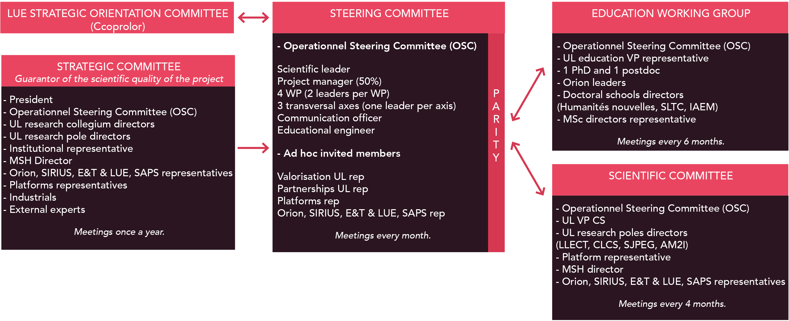

Le projet sera piloté par un responsable scientifique, avec l'appui d'un chef de projet. Il sera régi par quatre comités, chargés du suivi quotidien de l'avancement du projet, tout en veillant à son orientation générale.

Comité de pilotage opérationnel (OSC)
Le Comité de pilotage opérationnel (OSC) rassemble le responsable scientifique, les responsables des work packages et des axes transversaux, le chef de projet, le responsable de la communication et l'ingénieur pédagogique. Des représentants de la valorisation, des partenariats, des plateformes, ainsi que des différents projets partenaires de France 2030 sont invités de manière récurrente. Ce comité se réunit mensuellement pour lancer les différentes opérations et en assurer le suivi.
Comité stratégique
Le Comité stratégique est chargé, une fois par an, de vérifier l'avancement des différents projets, de garantir leur qualité scientifique et de donner de nouvelles impulsions à la dynamique du projet. Il intègre l'OSC, ainsi qu'un représentant de la présidence de l'université, les collégiums concernés par les opérations du projet, les pôles CLCS, LLECT, SJPEG et AM2I, un représentant institutionnel (Métropole, Régions, etc.), le directeur de la MSH, des représentants des projets France 2030, des représentants des plateformes, deux industriels et deux experts scientifiques externes au projet.
Groupe de travail Formation
Le Groupe de travail Formation se concentre sur les enjeux liés à la formation. Il se réunit deux fois par an pour suivre les développements en matière de formation à l'IA et au TAL sur le périmètre du projet. Il rassemble l'OSC, un représentant du VP Formation, un doctorant et un post-doctorant du projet, un représentant d'Orion, un représentant des écoles doctorales Humanités nouvelles, SLTC et IAEM, ainsi que des représentants des formations de master engagées dans le projet.
Comité scientifique
Le Comité scientifique s'intéresse aux aspects recherche du projet. Cet enjeu jouant un rôle important dans l'avancement du projet et dans ses perspectives d'avenir, il se réunit plus fréquemment que le Comité stratégique (tous les 4 mois). Outre l'OSC, il inclut un représentant du VP Recherche, les pôles scientifiques LLECT, CLCS, SJPEG et AM2I, des représentants des plateformes, le directeur de la MSH et des représentants des projets France 2030.